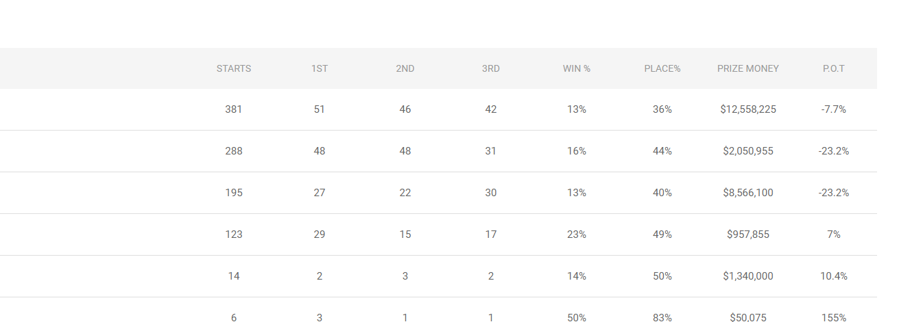
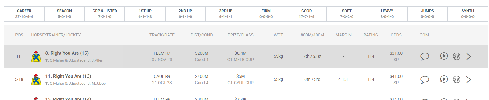

Hello again my friends, I got into a very interesting project while learning how to better work with BeautifulSoup, and I felt like sharing with you. I saw a tutorial and it looked so easy that I decided to find a different table to extract so I could have a better challenge and ended up here. After successfully extracting the jockeys stats table, I wondered “How much people already played with horse racing data?”
Easy answer: not much, according to wikipedia, only 10 countries host horse racing, and during my research for data, I found info mostly about Australia, New Zealand, Hong Kong and Singapure races.
Well that means more BeautifulSoup practice for me, right?!
But before that, I need to understand the horse racing world, I’ve read so many expressions that are completely new to me. Because of that, todays post is aiming to show:
What you need to know before going into a horse race dataset
To effectively analyze horse race data, there are several key areas one must understand:
1. The Jockeys
The jockey is much more than just a rider. Their skill, experience, and even weight play a significant role in the performance of the horse. Understanding a jockey’s track record, including wins, losses, and strategies, can provide valuable insights into future races, and at raceing I found:

2. The Trainers
Behind every successful horse and jockey is a trainer. Trainers are responsible for preparing the horse for the race, which includes physical training, nutrition, and strategy. Analyzing a trainer’s history, methods, and success rate is crucial for predicting how well a horse might perform.

3. The Horses
Each horse has its unique traits - age, breed, lineage, past performance, and more. Some breeds are known for their speed, others for endurance. The lineage can also give clues about a horse’s potential. Understanding these aspects can significantly enhance the analysis of race outcomes. Also, you will see different info from the two above, that’s because each one has a stats and form tab, what you saw above was the stats tab, now lets see the other one.

4. The Tracks
Racetracks vary widely - in terms of surface (dirt, turf, synthetic), length, and weather conditions. Some horses perform better on certain surfaces or track lengths. The condition of the track on race day can also impact the results. It’s important to include these variables in any comprehensive analysis.
5. Race Types and Classifications
Horse races come in different forms: flat racing, steeplechase, harness racing, etc. Within these, there are classifications based on the age and ability of the horses. Understanding the type and classification of the race is vital for contextual analysis.
6. Betting Odds
While not directly related to the physical aspects of the race, betting odds are a reflection of public perception and can indicate the favorites and underdogs. These odds can sometimes offer insights into factors that may not be immediately apparent in the raw data.
7. External Factors
Factors such as weather conditions on the day of the race, the horse’s mood and health, and even the jockey’s physical condition can influence the race outcome. While some of these are difficult to quantify, they are important to acknowledge.
Now that we identified the variables that can impact race results, lets get a little more specific. Because when I looked at the data I asked myself “what the heck means P.O.T? What does the rating mean in the Form tab?”
Well, let’s answer that, it might get a little boring of a list, but hang on, we’re almost finishing.
CAREER: This shows the horse’s total career statistics, often in the format of starts-wins-seconds-thirds. For example, “27-10-4-4” would mean the horse has started 27 races, winning 10, finishing second 4 times, and third 4 times. The same idea goes for Season
GRP & LISTED: This column shows the horse’s record in Group and Listed races, which are higher-class races. “7-2-1-0” means the horse has entered 7 such races, won 2, came second once, and has not placed third.
1ST UP: The horse’s performance when racing for the first time in a new racing season or after a break. “6-1-1-3” indicates 6 first-up starts, with 1 win, 1 second, and 3 third-place finishes. Same idea goes for 2ND UP and 3RD UP.
FIRM/GOOD/SOFT/HEAVY: These columns indicate the horse’s performance on different track conditions. For example, “17-7-1-4” under GOOD suggests the horse has raced 17 times on good rated tracks, with 7 wins, 1 second, and 4 thirds.
JUMPS: Shows the horse’s performance in jump races (if applicable), which are races involving hurdles or fences.
SYNTH: The horse’s record on synthetic tracks, which are artificial surfaces.
POS: The position the horse finished in the race.
HORSE/TRAINER/JOCKEY: Names of the horse, the trainer(s), and the jockey.
PRIZE/CLASS: The total prize money and the class of the race (e.g., G1 for Group 1, which is the highest level of race).
WGT: The weight carried by the horse, including the jockey and gear.
800M/400M: The horse’s position at 800 meters and 400 meters from the finish line.
MARGIN: How far the horse was from the winner, in lengths.
RATING: A handicap rating assigned to a horse based on its performance. It’s a number that allows horses of different abilities to compete on equal terms, with higher-rated horses carrying more weight. The exact method of calculation can vary by racing jurisdiction but generally involves the horse’s past performance, the quality of the races it has run in, and the margins of victory or defeat.
ODDS: The betting odds for the horse at the start of the race.
COM: Commentary or notes about the horse’s performance in the race.
There three more that I found interesting:
P.O.T: This stands for “Profit on Turnover.” It is a measure used by bettors to calculate the profitability of their bets. For a jockey, it would typically refer to the profitability of betting on all the races that the jockey has ridden. It is calculated by taking the total returns from bets on a jockey’s rides, subtracting the total amount bet, and then dividing by the total amount bet. This is often expressed as a percentage. A positive percentage means a profit, while a negative percentage indicates a loss.
S Rate: This is usually shorthand for “Strike Rate.” In horse racing, a jockey’s strike rate is the percentage of races won out of the total number of races ridden. A higher strike rate indicates a jockey who wins a larger proportion of their races. It’s calculated as (Number of Wins / Total Rides) x 100.
U.D.R: This typically stands for “Universal Driver Rating” or sometimes “Universal Jockey Rating,” depending on the context. It’s a handicapping tool used primarily in harness racing but can be applied in thoroughbred racing to assess a driver’s or jockey’s performance. The U.D.R. is calculated by a formula that takes into account wins, seconds, and thirds, giving more weight to wins. The formula is ([Wins x 9] + [Places x 5] + [Shows x 3]) / (Total Drives x 9). This gives a figure between 0 and 1, which can be interpreted as a batting average. The closer to 1, the better the performance.
I’ll explore the main areas Jockey, Trainer, Horse and Track, sharing my findings and the challenges I encounter at my github (remember I left the link at the start). This exploration is not just about understanding data; it’s about understanding the sport of horse racing itself. So, stay tuned as we dive deeper into this fascinating world!